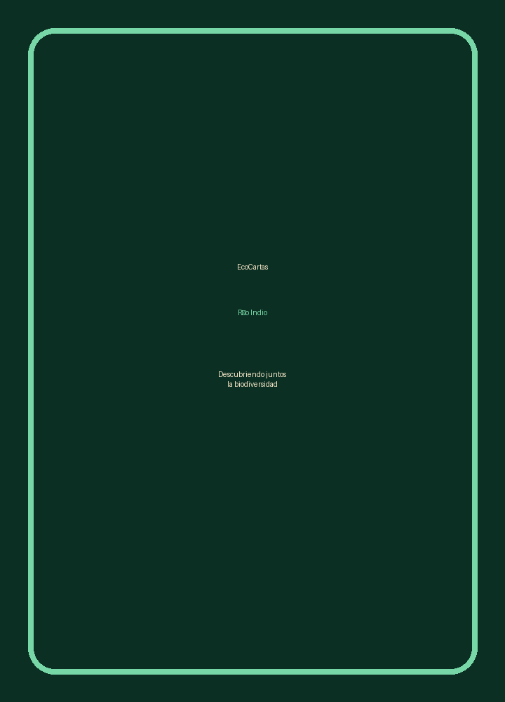

Juego educativo offline para tablets
La cuenca también se juega.
Cada carta presenta una especie, su hábitat y su alimentación. Explora, compara y juega para descubrir cómo la biodiversidad del Río Indio conecta bosques, ríos, humedales y comunidades.

Explorar cartas
Filtra por grupo, toca una carta y abre su ficha ampliada.
Memoria biodiversa
Encuentra la pareja: imagen + nombre común.
¿Quién vive dónde?
Relaciona cada especie con su hábitat. El objetivo es entender que cada organismo necesita condiciones específicas para vivir.
Especies en alerta
Estas cartas tienen una categoría visible en la base actual. El mensaje central es simple: conocer ayuda a proteger.